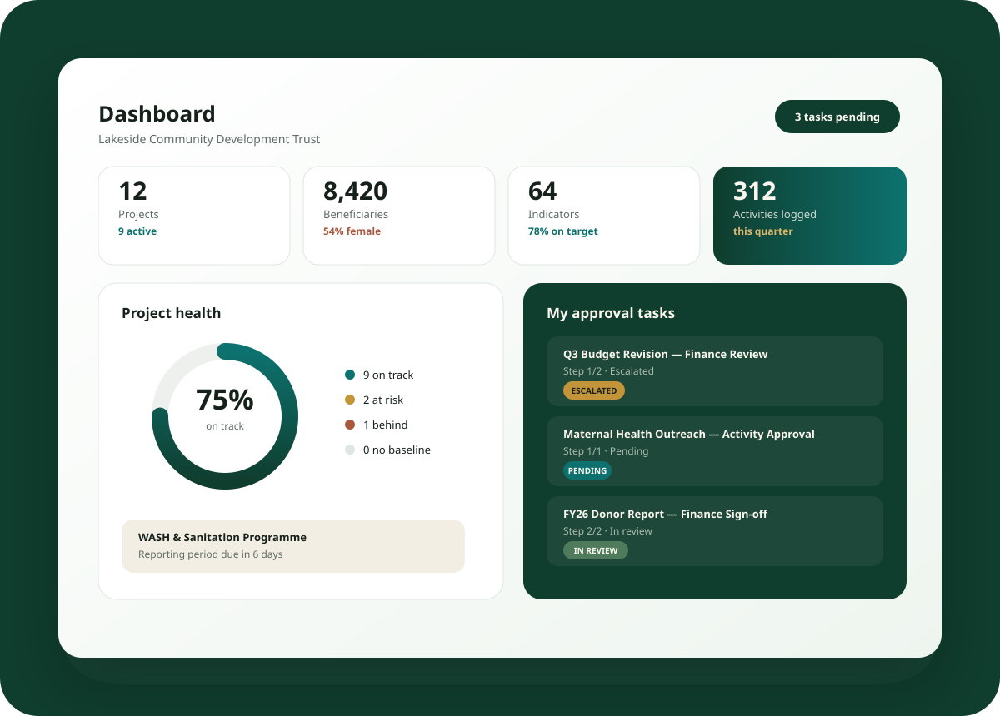

Logframes and indicators
Structure goals, outcomes, outputs, activities, baselines, targets, means of verification, and collection frequencies.
Monitoring, evaluation, grants, and budgets
Evidara helps grant-funded teams plan programs, track indicators, approve field activity, monitor budgets, and produce credible donor reports without stitching together spreadsheets, email threads, and PDF templates.

The operating system for evidence
Structure goals, outcomes, outputs, activities, baselines, targets, means of verification, and collection frequencies.
Let field teams submit evidence while M&E officers review progress before it flows into reports.
Track allocations, line items, spending variance, grant periods, funders, and implementation health in one place.
Generate clean progress summaries, portfolio dashboards, and evidence-backed updates for recurring donor cycles.
Why teams choose Evidara
Evidara is built around institutional workflows: annual grants, partner reporting, approval controls, audit trails, and leadership visibility across projects.
Standardize indicators, activity evidence, and reporting periods before data becomes a donor problem.
Turn approved field activity and budget progress into repeatable reports for funders and boards.
Give program, finance, and leadership teams a shared picture of what is on track, delayed, or at risk.
Pricing
Start small, then expand across projects, countries, partners, and donors.
For small local NGOs and pilot programs.
$99/moFor multi-donor NGOs with active portfolios.
$299/moFor INGOs and multi-country programs.
$699/moSEO content
Evidara gives nonprofit teams a modern alternative to spreadsheet-based M&E. Program managers can track logframe indicators, field activities, beneficiaries, partners, budgets, grants, and donor reporting from a single cloud workspace. Finance teams can monitor budget variance while M&E teams validate evidence and leadership reviews portfolio progress across projects. For NGOs, INGOs, USAID-funded programs, UN sub-recipients, and local implementation partners, Evidara creates a reliable source of truth for performance management and accountability.
FAQ
No. Starter is designed for smaller teams and pilots, while Growth and Organization support larger portfolios.
Yes. Teams can centralize indicators, activities, approvals, budget tracking, grants, and donor reports.
Yes. Evidara is designed to turn approved activity and indicator progress into donor-ready reporting workflows.